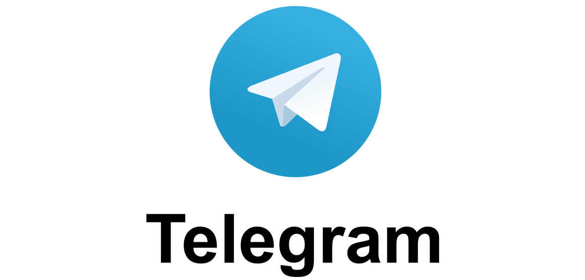

MI BLOG
REDES SOCIALES
Bienvenidos todos a mi blog en el cual se hablara mucho sobre las
redes sociales y lo que influye a las personas en la vida cotidiana.

TELEGRAM
Telegram es una app de mensajería instantánea gratuita lanzada oficialmente el 20 de octubre de 2013. Creada por los hermanos Pavel Durov y Nikolai Durov, la app se desarrolló con un protocolo de datos personalizado, abierto, seguro y optimizado para trabajar con múltiples centros de datos que dió como resultado lo que hoy en día todos conocemos como Telegram. Telegram se puede usar en varios dispositivos al mismo tiempo y los mensajes se sincronizan a través teléfono, tablet o computadora sin importar qué sistema operativo utilizan.
